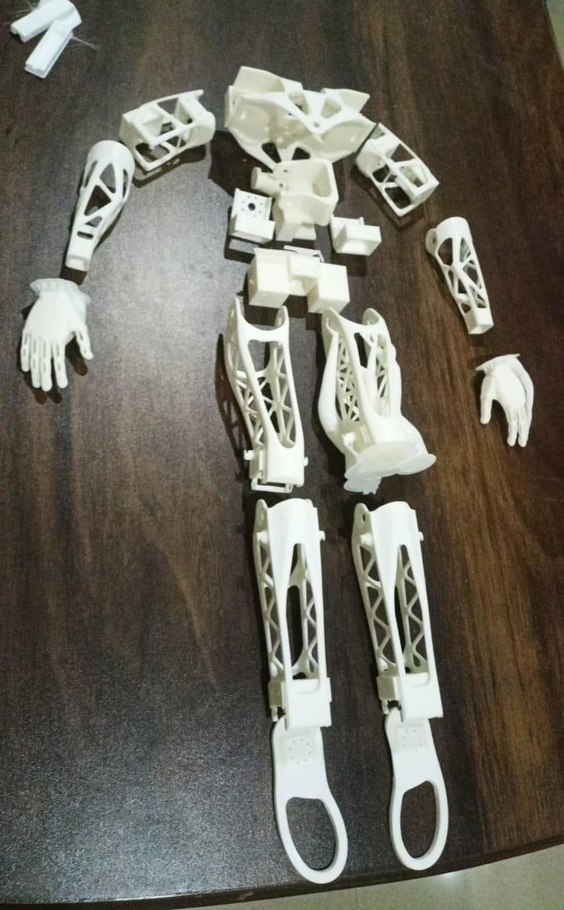
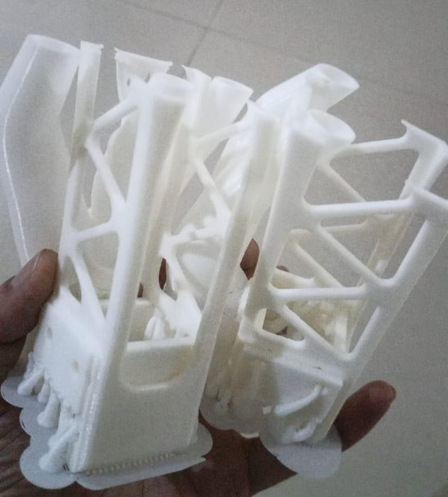
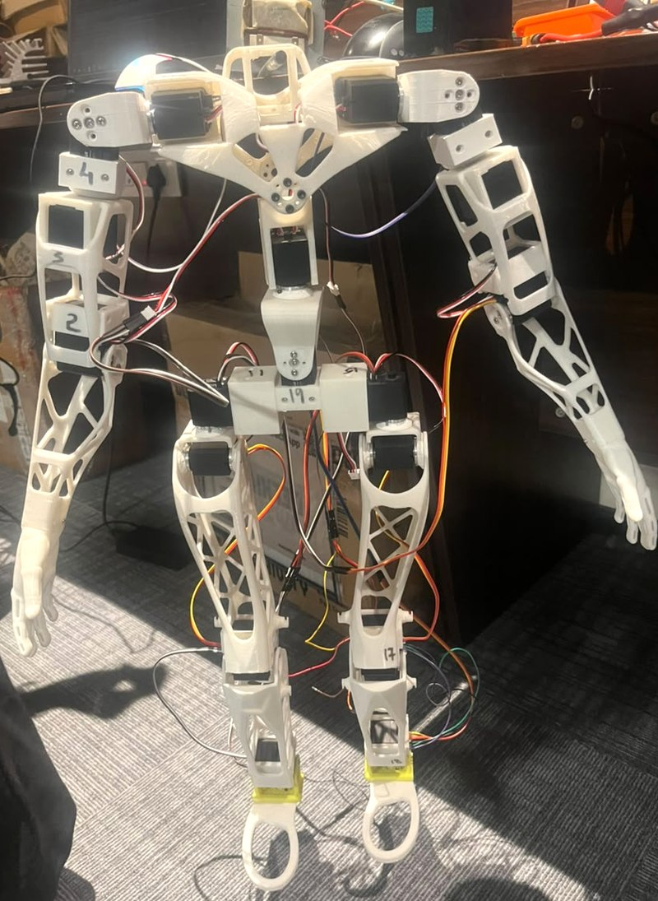
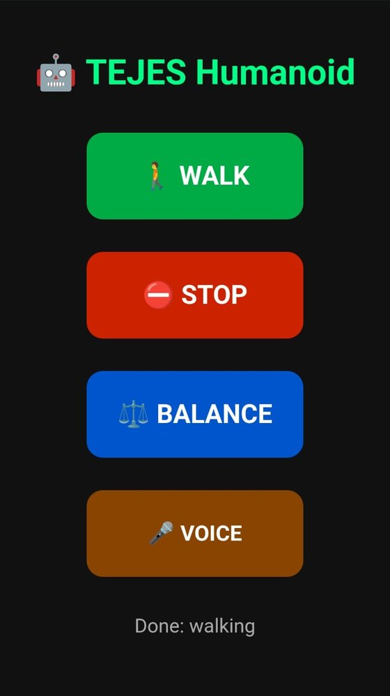
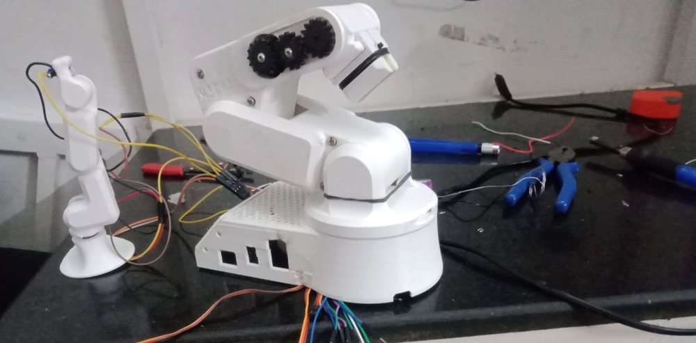
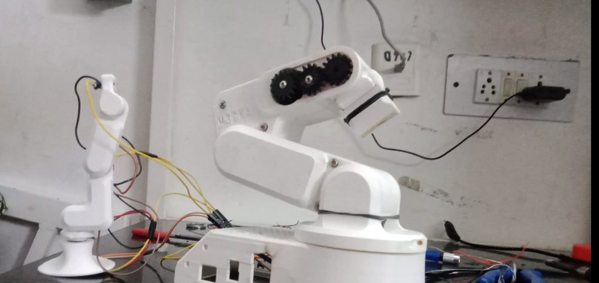

I build humanoids and the software that walks them.
Mechatronics engineer working on bipedal hardware, ROS 2 control, and reinforcement learning for locomotion. Currently in Tamil Nadu, happy to relocate.
CAD and actuators, ROS 2 integration, gait work in simulation, an interface to drive it, and hardware that had to survive being deployed outdoors.
19-DOF bipedal humanoid
Nov 2025 – Jun 2026
A nineteen-degree-of-freedom biped designed in Fusion 360, printed and assembled in-house, and run from a Raspberry Pi over ROS 2.
Full mechanical design and assembly — every structural part printed and finished by hand
Weight-relieved lattice shells for the limbs, so the leg servos aren't fighting their own linkages
Servo bridge translating joint targets in radians into ST3215 tick commands, with per-joint direction, home offset and travel limits calibrated individually
IMU and foot force sensing on board for balance and contact detection
URDF/XACRO built and validated in RViz before anything moved on hardware
YOLO vision navigation in progress on a Raspberry Pi 5 with the Pi AI Camera

Every structural part printed in-house

Lattice-cored shells, supports still on

Assembled and poweredStepping test, weight shifting side to side
A ROS 2 package that walks the humanoid without vision or contact sensing. The gait is generated in joint space — sinusoidal hip, knee and ankle trajectories with a lateral waist roll, ramped in from a stand pose — and every joint passes through a slew limiter and hard limits before it reaches an actuator. The same node runs in Gazebo and on the robot; only the parameters change.
19 named joints published as a position vector through ros2_control, with PID gains tuned separately for arms and legs
Two parameter sets: 25 Hz with a 1.2 s step period in sim, 8 Hz with a 3.2 s step and a quarter of the gait amplitude on hardware, so a bad command can't slam a servo
Per-tick slew limit of 0.015 rad in sim and 0.005 rad on the robot, on top of per-joint range limits
A monitor node watches base height and roll/pitch in Gazebo and resets the model on a fall, so parameter sweeps run unattended
PPO agent trained in Gazebo with multi-objective reward shaping, reaching stable walking around 2M timesteps
Sim-to-real transfer in progress — moving the learned gait onto the physical robot, where the hand-tuned open-loop gait currently runs
Separate MuJoCo work trains locomotion with SAC (Stable-Baselines3) on a single RTX 4050 laptop — switching to SubprocVecEnv and retuning batch size cut CPU temperatures enough to finish long runs
A web interface served straight off the Raspberry Pi, so the robot can be driven from any phone on the same network without SSH or a laptop.
Walk, stop and balance as one-tap commands mapped to ROS 2 actions
Voice control through browser speech recognition, for hands-free triggering mid-test
Status line reports what the robot actually did, not what was asked of it

Control page, mid-test
Raspberry PiROS 2web serverspeech recognition
Long-range GPS tracking system
Jun – Aug 2024 · IIT Tirupati
A Raspberry Pi and SX1278 LoRa tracker built during a research internship at IIT Tirupati (IITTNiF, Dept. of Science & Technology), deployed in the field rather than left on a bench.
Hardware bring-up, firmware, and on-site testing across urban and open environments — 2 km+ range achieved
Benchmarked RSSI and packet loss across sites; delivered the technical report to IITTNiF
Raspberry PiLoRaWANSX1278GPSembedded Linux
6-DOF robotic arm
Aug – Dec 2024
A six-axis manipulator modelled in URDF/XACRO and planned with MoveIt 2, built ahead of the humanoid work to get hands-on with kinematics.
Collision-aware motion planning, sub-10 mm positional repeatability
DDPG trajectory controller as an alternative to classical IK
Real-time YOLO pick-and-place

Arm and gripper on the bench, mid-wiring

Geared wrist — the joint that set the repeatability limit
MoveIt 2ROS 2DDPGYOLOURDF/XACRO
About
Hardware first, then the policy
I'm a mechatronics engineer out of Chandigarh University, based in Tamil Nadu, with a research internship at IIT Tirupati behind me. Most of what I know came from building a humanoid from nothing — printing every part, numbering every joint, and finding out which assumptions break when a real servo has to hold a real load.
That's shaped how I work. I'd rather run a conservative gait on hardware and watch what actually happens than trust a policy that only ever ran in a simulator. The interesting problems sit exactly where the model and the machine disagree.
I'm looking for research assistant positions and robotics engineering roles in humanoids, legged locomotion, or RL for control — in India or abroad. I also take freelance simulation and RL training work.
Based inTamil Nadu, India
DegreeB.E. Mechatronics, Chandigarh University (2022–2026)
FocusHumanoids, locomotion, RL for control
Robot19 joints, printed in-house
Open toRA roles, robotics engineering, freelance
Skills
What I use day to day
Not everything I've ever opened — the tools I've shipped something with.
Robotics
ROS 2 Humble
ros2_control
MoveIt 2
Nav2
RViz
URDF
Simulation
Gazebo
MuJoCo
PyBullet
Isaac Sim
Learning
Stable-Baselines3
PPO
SAC
DDPG
PyTorch
CUDA
Perception
SLAM
YOLO
OpenCV
IMU
Force sensing
Hardware
Raspberry Pi
Arduino
ST3215 servos
LoRaWAN
Fusion 360
SolidWorks
3D printing
Systems
Ubuntu
Docker
Python
C++
Git
Contact
Let's talk
Research groups, robotics teams, and freelance work all welcome. I reply to everything.